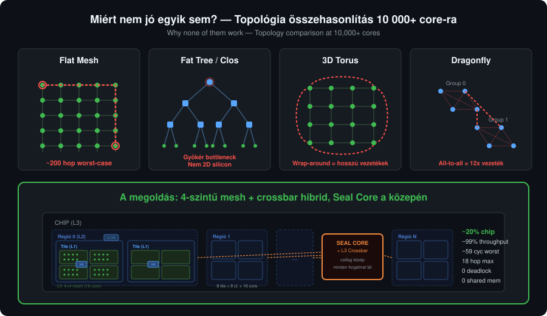
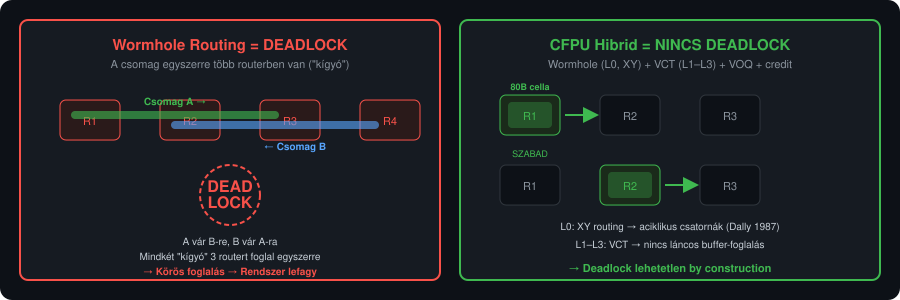
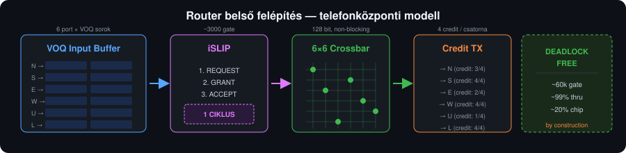

A kérdés, amire válaszolnunk kellett
A Cognitive Fabric Processing Unit (CFPU) nem hagyományos processzor. Nem egyetlen nagy, gyors magot építünk — hanem több ezer kis, önálló CIL-natív magot, amelyek üzenetekkel kommunikálnak, nincs közös memóriájuk, és mindegyik a saját aktor-programját futtatja. Mint egy hardverbe öntött Akka.NET cluster.
De amikor a Neuron OS fejlesztése során elkezdtük tervezni az operációs rendszert ehhez a chiphez, kiderült: az architektúra dokumentumunk nem ad választ arra a kérdésre, ami a legnagyobb kihívás.
Hogyan beszélget egymással 10 000+ processzormag egyetlen chipen belül?
Amit a tankönyv mond — és amit nem
A Network-on-Chip (NoC) irodalom évtizedek óta ismeri az alapvető topológiákat. Mindegyiket végigvizsgáltuk 10 000+ Rich Core / chip skálán:
Flat mesh (2D rács) — a legegyszerűbb. Minden mag a négy szomszédjával beszél. A Cerebras wafer-scale chip is ezt használja. De 10 000 magnál a rács 100×100-as, a legtávolabbi magok ~200 hop-ra vannak egymástól. Elfogadhatatlan latencia.
Fat tree (Clos hálózat) — az adatközpontok kedvence. Bármely két pont ~6 hop-ra van. A tiszta fat tree gyökér switch-e bottleneck és single point of failure — de ezek megoldhatók több gyökérrel és a szintek közötti horizontális linkekkel. Csakhogy ha a fa szintjeit horizontálisan összekötjük, a topológia konvergál a hierarchikus mesh-hez — és ott jobbat tudunk csinálni.
3D torus — a Fugaku szupergép topológiája. A wrap-around linkek felezik az átmérőt, de a chip szélétőt a másik széléig húzódó vezetékek fizikailag problémásak.
Dragonfly — a Frontier szupergép választása. Csoportokon belül all-to-all összekötés, csoportok között ritkább linkek. Szuperszámítógépek között kiváló. De chip-en belül az all-to-all vezetékigény ~12× annyi, mint a mesh. Nem reális.
Egyik sem volt meggyőző.

A fordulópont: a telekommunikáció már megoldotta
A megoldás nem a chip-tervezés, hanem a telekommunikáció felől jött.
Az ATM (Asynchronous Transfer Mode) hálózatok az 1990-es években egy egyszerű, de mély felismerésre épültek:
Ha minden csomag azonos méretű, a kapcsoló hardver drasztikusan egyszerűsödik.
Az ATM 53 byte-os fix cellákat használt. Mi 64 byte hasznos adatot választottunk (16 byte header + 64 byte payload = 80 byte) — de az elv ugyanaz. Fix cella = determinisztikus időzítés = egyszerű hardver = kevesebb tranzisztor = több processzormag fér a chipre.
Aztán jött a második felismerés a telefonközpontokból: a Virtual Output Queuing (VOQ). A hagyományos router-ben, ha egy csomag blokkolva van, mögötte minden más is áll — ezt hívják Head-of-Line (HOL) blocking-nak. A VOQ minden kimenő port felé külön sort tart. Ha az A port felé blokkolva vagyunk, a B port felé menő csomagok zavartalanul haladnak tovább. Ez egyetlen lépésben ~58%-ról ~99%-ra emeli a throughput-ot.
A harmadik elem: az iSLIP scheduler (Nick McKeown, Stanford, 1999). Minden ciklusban maximális számú párhuzamos átvitelt ütemez, round-robin fairness-szel, egyetlen órajelciklus alatt. ~3 000 gate — elenyésző költség.
A deadlock, ami nem létezik
A chip-beli hálózatok egyik legnagyobb réme a deadlock — amikor a csomagok körkörösen egymásra várnak, és az egész rendszer lefagy. A hagyományos megoldás: bonyolult routing korlátok, Virtual Channel-ek, formális bizonyítások.
A mi rendszerünkben a deadlock nem létezik. Nem megoldottuk — megszüntettük.
A CFPU hibrid switching modellt használ, szintenként optimalizálva. Az L0 mesh-en wormhole routing fut: a header flit azonnal továbbítódik, a body flitek pipeline-ban követik. Az XY dimension-ordered routing (Dally & Seitz, 1987) teljes rendezést hoz létre a csatornákon — ciklikus függőség nem alakulhat ki.
Az L1–L3 crossbar-okon Virtual Cut-Through (VCT): a cella teljesen beérkezik az input bufferbe a switching előtt. Nincs láncos buffer-foglalás a hop-ok között. A VOQ megakadályozza a HOL-blocking szétterjedését, a credit-based flow control a buffer túlcsordulást.

A három döntési elv
1. Biztonság — nem alku tárgya
A CFPU shared-nothing architektúrája nem teljesítmény-optimalizáció — biztonsági garancia. Ha nincs közös memória, nincs pointer-manipuláció, nincs side-channel támadás a szomszéd mag adatára, nincs isolation-sértés.
Minden javaslat, ami közös memóriát vezetne be — legyen az chip-szintű cell pool, zero-copy pointer sharing, vagy shared buffer — automatikusan kiesik. A magok másolással küldenek üzenetet, nem pointer-átadással. Ez lassabb? Igen. De biztonságos.
2. Core szám — a számítási teljesítmény
Minden gate, amit a routerre költünk, az egy processzormagból hiányzik. Az interconnect hálózat „intelligensebbé” tétele növeli a router méretet — és csökkenti a magok számát.
A számítás egyszerű: egy adaptív router-rel ~9 700 mag fér a chipre, XY routing-gal ~10 500. Az adaptív routing javítja a latenciát, de a 800 elvesztett mag több számítási kapacitást jelent, mint amennyit a jobb latencia visszaad.
3. Üzenet sebesség — de egyszerűen
A hálózatnak gyorsnak kell lennie — de nem „okosnak”. Az okos router nagy, a nagy router kevesebb magot hagy. A megoldás: egyszerű, de bizonyítottan hatékony technikák a telekommunikációból.
A végső architektúra
A végső tervezési döntés két kulcsfelismerésből született. Az első: a mesh a core szinten optimális (fizikailag szomszédos, rövid vezetékek), de a felsőbb szinteken a crossbar hatékonyabb — determinisztikus 1 hop, kis portszám (8-12), telefonközponti VOQ+iSLIP. A második: a Seal Core a chip közepén, az L3 crossbar-ral egybeépítve, minden cross-régió forgalom természetesen áthalad rajta — biztonsági ellenőrzés extra routing nélkül.
10 000+ Rich Core / chip (paraméterezhető, chipmérethez igazodik)
4 szintű hierarchia:
L3: Chip ── 8 régió, csillag topológia, középen Seal Core + crossbar
└── L2: Régió ── 8 tile, 8×8 crossbar (régió közepe), soros link
└── L1: Tile ── 8 cluster, 8×8 crossbar (tile közepe)
└── L0: Cluster ── 16 Rich Core, 4×4 mesh
16 × 8 × 8 × 8 = 8 192 core (refer. konfiguráció, 7nm, 800 mm²)
Minden crossbar a saját szintjének geometriai közepén van — így minden porthoz egyforma max távolság, fair és determinisztikus latencia. Az L3 szinten csillag topológia: minden régió közvetlenül a központi Seal Core + crossbar-hoz csatlakozik — cross-régió forgalom mindig pontosan 2 hop.
| Szint | Topológia | Portok | Link típus | Miért? |
|---|---|---|---|---|
| L0: Core | 4×4 mesh | 16 | Párhuzamos | Fizikailag szomszédos, rövid vezetékek |
| L1: Cluster | 8×8 crossbar | 8 | Párhuzamos | Kevés port, fix 1 hop, VOQ+iSLIP |
| L2: Tile | 8×8 crossbar | 8 | Soros 10× | Közepes távolság, soros link |
| L3: Régió | Csillag (Seal Core közép) | 8 | Soros 10× | Seal Core lát minden forgalmat |
| Elem | Választás | Eredet |
|---|---|---|
| Cella | 16 + 64 byte fix (80 B) | ATM (1985) |
| Buffer | Virtual Output Queuing | Telefonközpont (1990-es évek) |
| Scheduler | iSLIP | Stanford (1999) |
| Flow control | Credit-based | Telefonközpont |
| Routing | XY (L0 mesh) + crossbar (L1-L3) | NoC + telekommunikáció |
| Kapcsolás | Wormhole (L0) + VCT (L1–L3) | NoC + telefonközpont |
Throughput: ~98% (Turbo, VOQ + iSLIP), ~75% (Compact).
Max hop: 18 (worst-case, cross-régió).
Max latencia: ~139 ciklus worst-case (~278 ns @ 500 MHz).
Deadlock: lehetetlen (Wormhole + XY + VCT + VOQ + credit).
Seal Core: chip közepe, lát minden cross-régió forgalmat.
Biztonsági kompromisszum: nulla.

Mit tanultunk?
Az NVIDIA GPU-ból tanultuk a hierarchikus aggregálást — 24 000 CUDA core-juk egyetlen 12-portú crossbar-on osztozik. Mi is ezt csináljuk: 10 000+ mag, de a chip-szintű mesh csak 16 portú.
Az Apple M-sorozatból tanultuk a cluster-alapú szervezést és a független power domain-eket — alvó cluster = nulla fogyasztás.
A telefonközpontokból tanultuk a VOQ-t, az iSLIP-et, és a store-and-forward deadlock-mentességet. Ezek a technikák évtizedek óta bizonyítottak milliós port-számú rendszerekben.
Amit elvetettünk
- Zero-copy / shared memory — biztonsági rés
- Adaptív routing — nem éri meg a core-vesztést
- In-network computation — 44% router terület, a magok fele eltűnik
- Fat tree — horizontális linkekkel konvergál a hierarchikus mesh-hez; a crossbar-os megoldás jobb
- Dragonfly — on-chip all-to-all vezetékigény irreális
A Seal Core nem bottleneck
A Seal Core két funkciót lát el: kód hitelesítés (ritka, de nehéz) és L3 crossbar routing (a crossbar önállóan végzi, a crypto engine nem dolgozik rajta). Boot-kor ~256 ms az összes core kódjának hitelesítése (8 192 core, 7nm). Runtime hot code loading: <0.1% kihasználtág. Az L3 crossbar ~25%-on üzemel 8k core-nál — ~30 000 core-ig skálázódik szaturáció nélkül. Mind a Seal Core, mind az L3 crossbar power-gated — ha nincs cross-régió forgalom és nincs kód betöltés, a chip közepén minden alszik.
A legmélyebb felismerés
A processzor-tervezés és a hálózat-tervezés ugyanaz a probléma — sok független egység, amelyeknek gyorsan, megbízhatóan, biztonságosan kell kommunikálniuk. A telekommunikáció ezt a problémát évtizedekkel ezelőtt megoldotta. Mi csak átültettük szilíciumra.
Nyílt forráskód
A CLI-CPU projekt teljes egészében nyílt forráskódú. A teljes tervezési folyamat, minden döntés és indoklás publikusan elérhető.
A CFPU nem hagyományos processzor. Nem gyorsabb akar lenni egyetlen szálon — hanem több ezer szálat akar párhuzamosan, biztonságosan, determinisztikusan futtatni. Az interconnect ennek a víziónak az alapja.